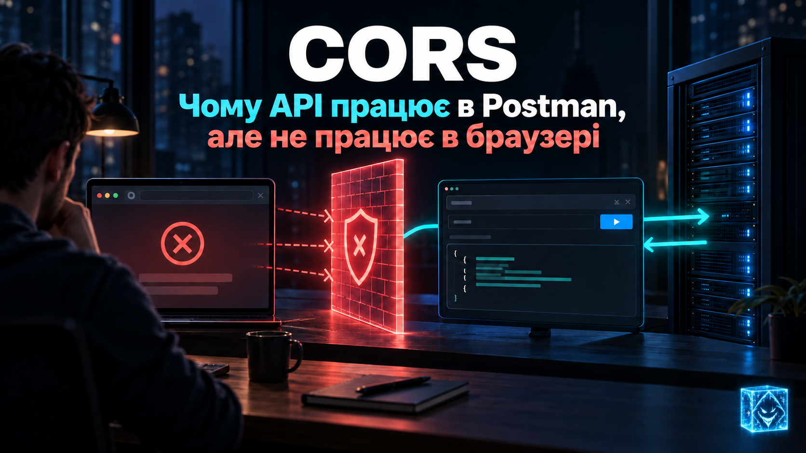
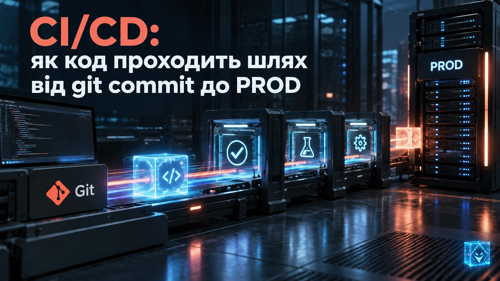
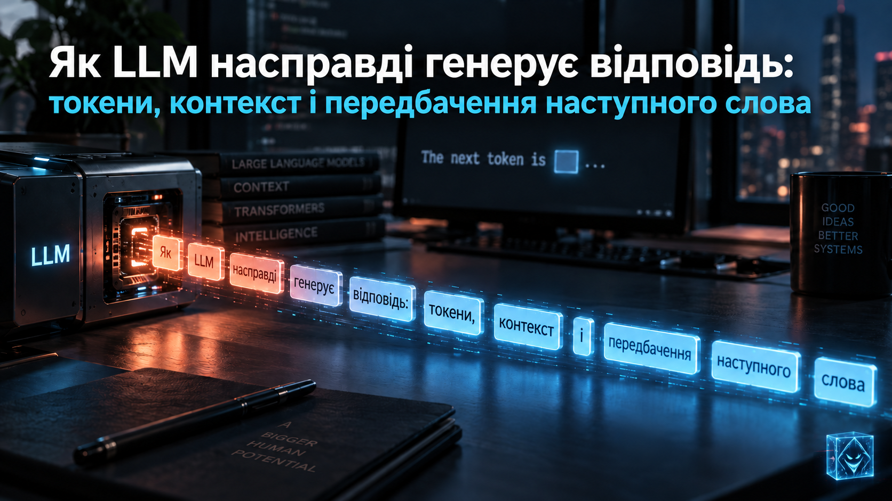
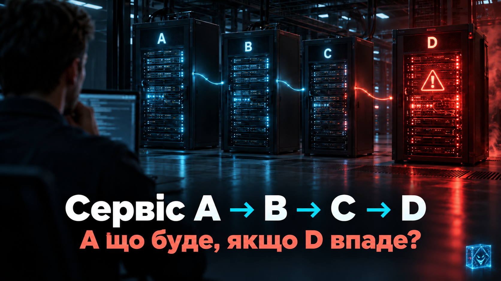

IT / ПРАКТИКА · БІБЛІОТЕКА ЗНАНЬ
TechHub
Технічні теми зрозумілою мовою. Архітектура, безпека, AI та робота IT-команд — від деталей до цілісної картини.
Перевірте знанняОкремий тест після кожних п’яти статей.
До тестів →
CORS: чому API працює в Postman, але не працює в браузері
Читати статтю ↗
🔓 IDOR: як зміна одного ID відкриває чужі дані
Читати статтю ↗
🕵️ CSRF: як браузер може виконати чужу команду від вашого імені
Читати статтю ↗
🌐 Як насправді працює вебсайт: від введення URL до сторінки на екрані
Читати статтю ↗
🧨 XSS: як звичайний текст користувача перетворюється на JavaScript у браузері
Читати статтю ↗
SOAP під мікроскопом: XML, WSDL і що насправді відбувається під час інтеграції
Читати статтю ↗🤖 AI-агент і база даних: як дати LLM доступ до корпоративних даних і не пошкодувати
Читати статтю ↗
CI/CD: як код проходить шлях від git commit до PROD
Читати статтю ↗🐇 RabbitMQ: навіщо потрібна черга, якщо сервіси можуть просто викликати API?
Читати статтю ↗Скільки технічних знань потрібно нетехнічним ролям в IT-команді?
Читати статтю ↗
Хто відповідає за твої знання в IT: компанія чи ти сам?
Читати статтю ↗
🤖 Як LLM насправді генерує відповідь: токени, контекст і передбачення наступного слова
Читати статтю ↗
🔌 REST API: чому POST /getCustomer працює, але це ще не REST?
Читати статтю ↗
🌐 HTTP-запит під мікроскопом: що насправді відбувається між Client і API?
Читати статтю ↗🔐 OAuth 2.0: як дати застосунку доступ, не віддаючи йому свій пароль?
Читати статтю ↗
🏗 Мікросервіси без контрактів: як одна маленька зміна API ламає пів системи
Читати статтю ↗
🤖 RAG чи Fine-tuning: як насправді «навчити» AI своїм даним?
Читати статтю ↗
⚙️ У Production все зелене. Але нічого не працює. Що не так із нашими Health Checks?
Читати статтю ↗
💻 Async/Await: чому async не означає паралельно?
Читати статтю ↗
🔐 JWT: чому токен — це не просто безпечний набір символів?
Читати статтю ↗
🏗 Сервіс A → B → C → D. А що буде, якщо D впаде?
Читати статтю ↗За вашим запитом статей не знайдено.